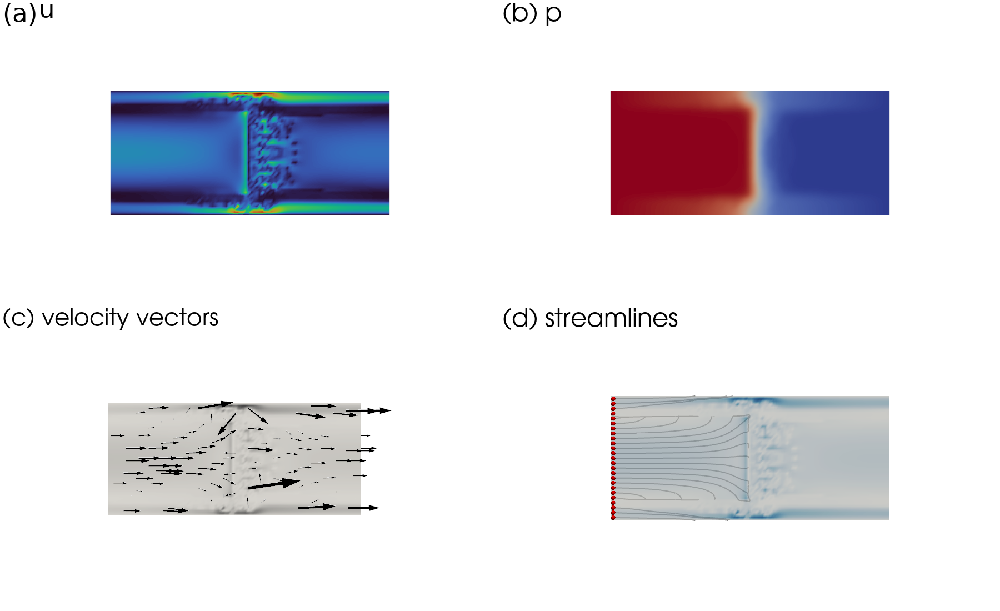
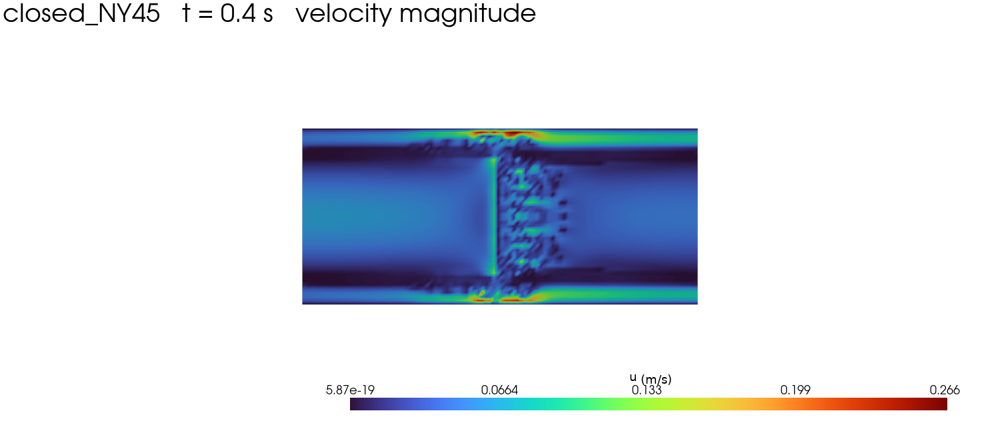
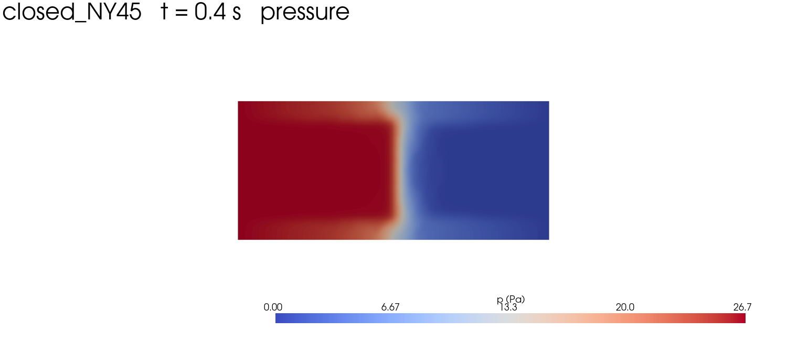
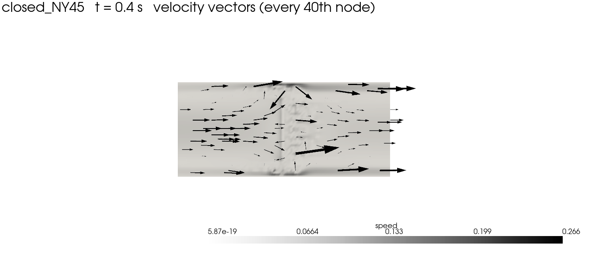
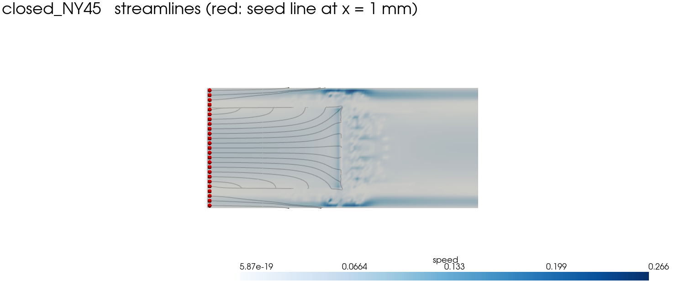
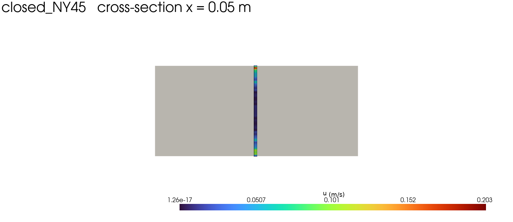

closed_NY45 — PyVista 示例图
数据: velocity.xdmf + pressure.xdmf, t = 0.4 s, 2-D 四边形网格 (4692 nodes / 4545 cells)

00_overview.png — 总览: |u|、p、速度矢量、流线

01_velocity_magnitude.png

02_pressure.png

03_velocity_vectors.png

04_streamlines.png

05_cross_section_x.png
生成脚本: make_examples.py